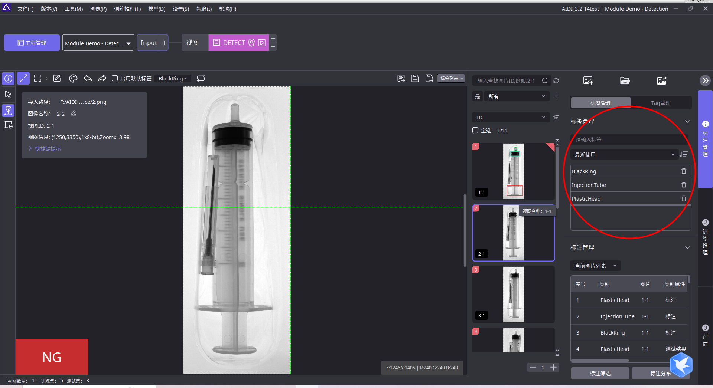
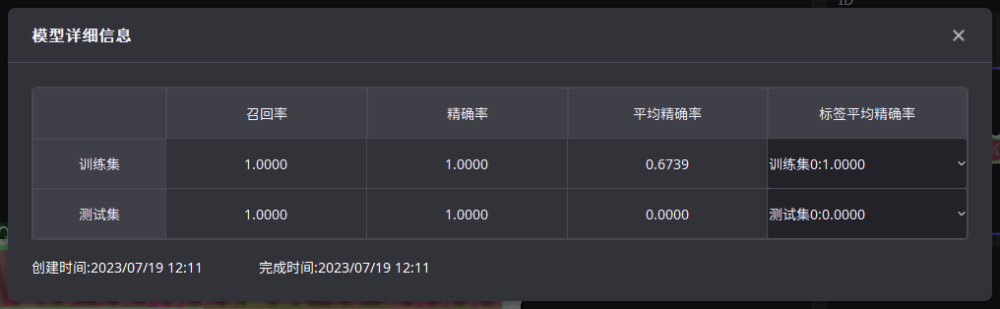
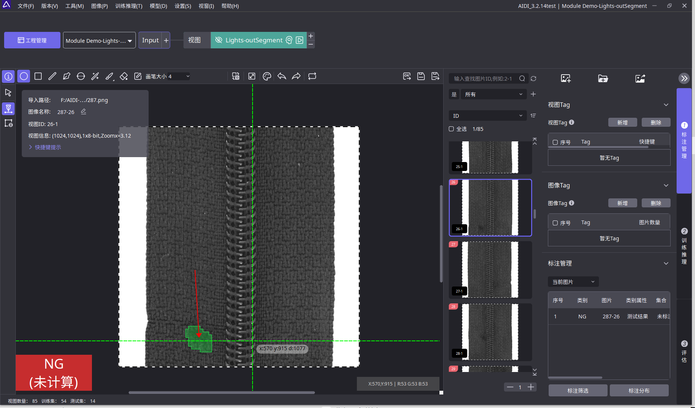
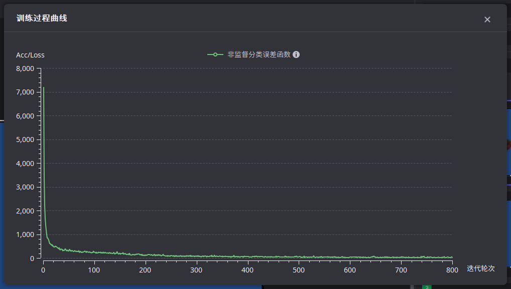

工具使用介绍
使用分割工具
步骤1：设置视图
根据实际需要设置视图，点击应用，跳转到工具主页面
步骤2：添加标签类别
步骤3： 对缺陷区域进行标注
键盘S键可以保存图像并跳转下一张

使用默认标签： 勾选之后，标注会自动使用所选标签，单类别缺陷标注时，建议勾选上
保存测试结果为标注：点击后，测试结果转化为标注结果
保存为OK图并跳转：保存当前图片为OK图并跳转到下一张图片
保存：保存当前缺陷标注，不跳转到下一张图片
保存并跳转：保存当前缺陷标注并跳转到下一张图片
标签列表：显示当前所有标签及其属性。勾选标签前的复选框，图片显示相应的标签标注
步骤4： 划分训练集
方式一：自动划分

模型训练助手共分为两个功能板块：数据划分和训练集推荐。

数据划分
比例划分：所有的已标注数据按照指定的比例划分训练集和测试集 数量划分：所有的已标注数据按照指定的数量划分训练集和测试集 自动类间均衡：按照指定的比例作为训练集总数，然后平均分给每个缺陷类别，最终按照缺陷类别分别划分数量相等的图像作为训练集，达到类间均衡。如果某类别数量上限不足要求，则按最大上限加入
方式二 用户手动加入训练集，支持多选
步骤5：调整训练参数
基准通道： 原图转换为彩色图或者灰度图进行训练，aqimg则每一张图均单独进行转换。
基本训练参数： 模型训练经常需要调节的参数，会直接影响模型训练的效果和速度。 训练轮数：调节范围1-20000，每次迭代训练集图像均参一次训练。 训练批次：调节范围1-512，网络训练每一次迭代时参与训练的图像数量，合适的批次能充分利用硬件性能和提升收敛速度，常见值有2，4，8，16。 训练模式：常规训练模式下从头开始训练模型。增量训练模式在选择的模型上增量训练。不需要从头开始重新训练整个模型
数据变换 难例采样率：调节范围0-1，设置的值越大，对重点学习区域的关注度越高。 精度等级设置方式：自动适用：算法根据原图尺寸、最小标注尺寸自适应推荐精度等级。人工设置：精度等级以人工设置为准。查看：实际使用精度等级可以再“帮助-查看日志”中查看。算法简述：算法会将输入网络时的图像短边缩放为256精度等级，长边等比例缩放，输入网络。 精度等级：调节范围1-20，将输入网络时的图像短边缩放为256精度等级，长边等比例缩放，较大的精度等级会使分割效果更精准，训练推理时间更长，显存消耗更大。 自定义输入尺寸：自定义所有输入图片的宽高。算法会按照该参数将图片缩放为设置的宽高
模型参数 模型架构：“小缺陷模型”对小缺陷的检测效果较好，而“综合模型”的综合效果较好。当小缺陷模型的检测效果不佳时，建议使用“综合模型”。“对比模型”仅用于混合图工程，适用于比对分割 稳定变换：在启用稳定变换的情况下，模型对目标轻微变换的适应性可以得到提高，但训练和推理速度会慢20%
几何增广 建议仅勾选可能存在的几何变化类型。通过对原有训练集进行一定范围内随机程度的几何变化，模拟实际场景可能会出现类似的图片，提升模型相应的泛化能力。 垂直翻转：以50%的概率垂直翻转训练图像 水平翻转：以50%的概率水平翻转训练图像 垂直旋转：将训练图像随机旋转90度的倍数 中心对称旋转：将训练图像随机旋转180度的倍数 裁剪溢出区域：裁剪由几何变换引起的溢出区域 启用轻微旋转：启用轻微旋转 启用垂直、水平移动：图片随机水平或垂直平移一定比例 启用缩放：按照一定比例随机缩放训练数据 启用扭曲：随机扭曲训练数据，用以模拟由镜头老化等因素造成的图像失真
图像增广 建议仅勾选可能存在的成像变化类型。通过对原有训练集进行一定范围内随机程度的成像变化，模拟实际场景可能会出现类似的图片，提升模型相应的泛化能力。 启用光照变化：训练集图像进行线性灰度变换，光照强度范围0-1降低亮度，12增强亮度。光照强度范围：调节范围0-2 启用对比度变化：保证图像整体亮度基本不变的情况下调整训练集图像对比度，对比度变化范围0-1降低对比度，1-2增强对比度。对比度变化范围：调节范围0-2 启用噪声：模拟相机或外部环境产生的随机噪声，噪声强度0-2效果逐渐增强。噪声强度：调节范围0-2 启用平滑/锐化：通过锐化图像模拟镜头对焦更准确的场景。开启之后，随机对训练图像进行平滑或锐化，其中-1-0表示平滑，0-1表示锐化 启用颜色滤镜：模拟不同颜色灯光或加滤镜产生的光照效果(只支持彩色图像)，颜色滤镜强度控制允许的颜色滤镜的最大强度，0-2效果逐渐增强。颜色滤镜强度：调节范围0-2 启用光照渐变：模拟光照位置偏移产生的光强渐变场景，光照渐变强度0-2效果逐渐增强。光照渐变强度：调节范围0-2
步骤6：调整推理参数
基本推理参数 推理批次大小：希望同时推理的图片数量，通常情况下，默认值为1即可。注意，如果设置较大的批次，但未提供足够的图片，可能会减慢推理的速度 推理模式：推理执行模式，默认为快速启动。有一下几种选项：“快速启动”启动速度快但推理速度一般；“极速推理（高精度）”启动速度稍慢但推理速度更快；“极速推理”推理速度最快但准确性可能略有下降。 过滤参数

像素阈值：调节范围0-1，保留像素得分在阈值之上的像素，再将相邻像素合并为区域。数值越高，标准约严格，可以降低漏检；数值越低，标准越宽松，可以降低过检，一般场景保持默认值即可 区域阈值：调节范围0-1，在像素阈值筛选后，根据 区域得分过滤保留的区域，体现为一个区域会被直接过滤掉，而不是逐渐变小然后被过滤掉。需要保持像素阈值筛选检出面积不变时使用 示意图：

特征阈值 启用过滤参数：勾选后过滤参数生效。类别名称：缺陷名称。面积范围：当勾选使用过滤后，只有区域面积处于面积范围内的区域会被判定为缺陷。长边范围：当勾选使用过滤后，只有区域长边处于长边范围内的区域会被判定为缺陷。短边范围：当勾选使用过滤后，只有区域短边处于短边范围内的区域会被判定为缺陷。


步骤7：开启训练、推理
训练过程曲线
分割误差函数：数值越低学习效果越好。数值较大说明预测位置或分类不准确，如果训练结束时，数值仍在下降过程，应当调高“训练轮数”再训练；如果训练结束时数值较高，且没有下降趋势，可以调整训练集，标注，参数。 缺陷像素召回率：越接近1说明缺陷检测越完整。 缺陷像素精确率：越接近1说明缺陷过检越少。
更多
模型的详细信息，包含：训练集、测试集分别的召回率、精确率、标注数、召回数、区域精确率、区域召回率

区域精确率：以缺陷区域为单位计算的精确率 区域召回率：以缺陷区域为单位计算的召回率
使用检测工具
步骤1：设置视图
根据实际需要设置视图，点击应用，跳转到工具主页面
步骤2：添加标签类别

步骤3： 对检测区域进行标注
键盘S键可以保存图像并跳转下一张
1.用默认标签： 勾选之后，标注会自动使用所选标签，单类别缺陷标注时，建议勾选上 2.保存测试结果为标注：点击后，测试结果转化为标注结果 3.保存为OK图并跳转：保存当前图片为OK图并跳转到下一张图片 4.保存：保存当前缺陷标注，不跳转到下一张图片 5.保存并跳转：保存当前缺陷标注并跳转到下一张图片 6.标签列表：显示当前所有标签及其属性。勾选标签前的复选框，图片显示相应的标签标注

步骤4： 划分训练集
方式一：自动划分

模型训练助手共分为两个功能板块：数据划分和训练集推荐。
数据划分 比例划分：所有的已标注数据按照指定的比例划分训练集和测试集 数量划分：所有的已标注数据按照指定的数量划分训练集和测试集 自动类间均衡：按照指定的比例作为训练集总数，然后平均分给每个缺陷类别，最终按照缺陷类别分别划分数量相等的图像作为训练集，达到类间均衡。如果某类别数量上限不足要求，则按最大上限加入
方式二 用户手动加入训练集，支持多选
步骤5：调整训练参数
基准通道 原图转换为彩色图或者灰度图进行训练，aqimg则每一张图均单独进行转换。
训练参数 模型训练经常需要调节的参数，会直接影响模型训练的效果和速度。 训练轮数：调节范围1-20000，每次迭代训练集图像均参一次训练。 训练批次：调节范围1-512，网络训练每一次迭代时参与训练的图像数量，合适的批次能充分利用硬件性能和提升收敛速度，常见值有2，4，8，16。
模型架构：简单网络，中等网络，复杂网络。在效率指标上依次递减，而在效果指标上则依次递增。
复杂网络：适用于绝大多数场景，并提供了最高的检测指标，尽管其效率相对较低。
中等模型：适用于更快的处理速度而对检测效果的精确度要求不是极高场景。
简单模型：适用于简单的检测任务，如仅提取图像中大致区域的ROI。
最大边长：调节范围64-99999，将输入图像长边缩放为最大边长，短边等比例缩放，若算法计算出需要的最大边长小于该参数，则自动设置最大边长。
几何增广 建议仅勾选可能存在的几何变化类型。通过对原有训练集进行一定范围内随机程度的几何变化，模拟实际场景可能会出现类似的图片，提升模型相应的泛化能力。 垂直翻转：以50%的概率垂直翻转训练图像 水平翻转：以50%的概率水平翻转训练图像 垂直旋转：将训练图像随机旋转90度的倍数 中心对称旋转：将训练图像随机旋转180度的倍数 裁剪溢出区域：裁剪由几何变换引起的溢出区域 启用轻微旋转：启用轻微旋转 启用垂直、水平移动：图片随机水平或垂直平移一定比例 启用缩放：按照一定比例随机缩放训练数据 启用扭曲：随机扭曲训练数据，用以模拟由镜头老化等因素造成的图像失真
图像增广 建议仅勾选可能存在的成像变化类型。通过对原有训练集进行一定范围内随机程度的成像变化，模拟实际场景可能会出现类似的图片，提升模型相应的泛化能力。
启用光照变化：训练集图像进行线性灰度变换，光照强度范围0-1降低亮度，1-2增强亮度。光照强度范围：调节范围0-2 启用对比度变化：保证图像整体亮度基本不变的情况下调整训练集图像对比度，对比度变化范围0-1降低对比度，1-2增强对比度。对比度变化范围：调节范围0-2 启用噪声：模拟相机或外部环境产生的随机噪声，噪声强度0-2效果逐渐增强。噪声强度：调节范围0-2 启用平滑/锐化：通过锐化图像模拟镜头对焦更准确的场景。开启之后，随机对训练图像进行平滑或锐化，其中-1-0表示平滑，0-1表示锐化 启用颜色滤镜：模拟不同颜色灯光或加滤镜产生的光照效果(只支持彩色图像)，颜色滤镜强度控制允许的颜色滤镜的最大强度，0-2效果逐渐增强。颜色滤镜强度：调节范围0-2 启用光照渐变：模拟光照位置偏移产生的光强渐变场景，光照渐变强度0-2效果逐渐增强。光照渐变强度：调节范围0-2
数据变换 自定义输入尺寸：自定义所有输入图片的宽高。算法会按照该参数将图片缩放为设置的宽高 步骤5：调整推理参数 推理网络参数 推理批次大小：希望同时推理的图片数量，通常情况下，默认值为1即可。注意，如果设置较大的批次，但未提供足够的图片，可能会减慢推理的速度 推理模式：推理执行模式，默认为快速启动。有一下几种选项：“快速启动”启动速度快但推理速度一般；“极速推理（高精度）”启动速度稍慢但推理速度更快；“极速推理”推理速度最快但准确性可能略有下降。 推理参数 置信度阈值：置信度大于此阈值的检出结果将被确定为目标 最小目标尺寸：只保留宽度和高度大于最小尺寸的结果 最大目标数：只保留置信得分最高的N个目标 得分阈值 可以对指定的缺陷类型设置得分阈值，大于设置数值的检出区域会被判为缺陷 特征阈值 启用过滤参数：勾选后过滤参数生效。类别名称：缺陷名称。面积范围：当勾选使用过滤后，只有区域面积处于面积范围内的区域会被判定为缺陷。长边范围：当勾选使用过滤后，只有区域长边处于长边范围内的区域会被判定为缺陷。短边范围：当勾选使用过滤后，只有区域短边处于短边范围内的区域会被判定为缺陷。
步骤6：开启训练、推理

训练过程曲线
定位框误差函数：数值较大说明定位误差大，数值越低学习效果越好。如果训练结束时，数值仍在下降过程，应当调高“训练轮数”再训练；如果寻来你结束时数值较高，且没有下降趋势，可以调整训练集，标注，参数。
更多
模型的详细信息，包含：训练集、测试集分别的召回率、精确率、标注数、召回数、区域精确率、区域召回率

区域精确率：以缺陷区域为单位计算的精确率 区域召回率：以缺陷区域为单位计算的召回率
使用定位工具
步骤1：选择算法类型
AI定位：用于复杂背景下目标定位需求。
几何匹配：若检测目标是轮廓清晰且不易变形的刚体，建议使用几何匹配。建议优先使用。
步骤2：AI定位
步骤2.1：AI定位-设置视图
根据实际需要设置视图，点击应用，跳转到工具主页面
步骤2.2：AI定位-添加标签类别

步骤2.3：AI定位-对检测区域进行标注
键盘S键可以保存图像并跳转下一张

使用默认标签： 勾选之后，标注会自动使用所选标签，单类别缺陷标注时，建议勾选上
保存测试结果为标注：点击后，测试结果转化为标注结果
保存为OK图并跳转：保存当前图片为OK图并跳转到下一张图片
保存：保存当前缺陷标注，不跳转到下一张图片
保存并跳转：保存当前缺陷标注并跳转到下一张图片
标签列表：显示当前所有标签及其属性。勾选标签前的复选框，图片显示相应的标签标注

单点定位
（1）首先画一条与目标的高或者宽平行的线段

（2）然后鼠标左键按住绘制

设置模板
节点模板 适应方式可以选择按比例或者按像素
参数 模板名称：当前模板名称，支持修改。 模板角度：当前模板的角度。 节点编号：当前选中节点的编号。支持添加删除节点。 节点类型：节点所能匹配关键点的类别。类别之间以定义类别的字符串区分。只有类别一致的关键点和模板节点可以相匹配。 节点中心：节点的中心位置。问题求解的目标即是找到一组变换，使变换后的各个节点坐标与关键点坐标基本吻合。 缩放：按缩放比例筛选。如果一种匹配模式所对应的相似变换的缩放比例不在此范围内，该匹配将被过滤掉。 旋转：按旋转角度筛选，如果一种匹配模式所对应的相似变换的旋转角度不在此范围内，该匹配将被过滤掉，逆时针旋转为正。 特征漏检个数：如果对于模板中有若干个节点，找不到能够相匹配的关键点，且如果这些无法匹配的节点的数量不超过该值，则也将相应的匹配模式保留到输出。由于增加了搜索空间大小，耗时会不同程度地增加。支持设置的最大值为3。为了避免同一个结果被重复输出等问题，当此参数设置为大于0时，如果一个节点可匹配到漏检个数较少的匹配模式中，则它不会再被匹配到漏检个数更多的匹配模式中。 模板保留数量：根据匹配距离由小到大排序，选取最优的若干个结果，其他的结果将被过滤掉。默认为全部保留。 节点最大允许偏差：匹配模式中每个模板节点与字符的位置都难免存在大于0的距离，如果某个节点到字符的距离超过该参数的值，该匹配将被过滤掉。
使用方法： 方法一：从已有标注创建：依次选中标注框，右键菜单中选择“创建匹配模板” 方法二：先进入模板匹配就窗口，然后手动添加节点并创建模板
步骤2.4： AI定位-划分训练集
方式一：自动划分

数据划分
比例划分：所有的已标注数据按照指定的比例划分训练集和测试集 数量划分：所有的已标注数据按照指定的数量划分训练集和测试集 自动类间均衡：按照指定的比例作为训练集总数，然后平均分给每个缺陷类别，最终按照缺陷类别分别划分数量相等的图像作为训练集，达到类间均衡。如果某类别数量上限不足要求，则按最大上限加入
方式二：手动划分 用户手动加入训练集，支持多选

步骤2.5：AI定位-调整训练参数
基准通道 原图转换为彩色图或者灰度图进行训练，aqimg则每一张图均单独进行转换。
训练参数 模型训练经常需要调节的参数，会直接影响模型训练的效果和速度。 训练轮数：调节范围1~20000，每次迭代训练集图像均参一次训练。 训练批次：调节范围1~512，网络训练每一次迭代时参与训练的图像数量，合适的批次能充分利用硬件性能和提升收敛速度，常见值有2，4，8，16。
几何增广 建议仅勾选可能存在的几何变化类型。通过对原有训练集进行一定范围内随机程度的几何变化，模拟实际场景可能会出现类似的图片，提升模型相应的泛化能力。 垂直翻转：以50%的概率垂直翻转训练图像 水平翻转：以50%的概率水平翻转训练图像 垂直旋转：将训练图像随机旋转90度的倍数 中心对称旋转：将训练图像随机旋转180度的倍数 裁剪溢出区域：裁剪由几何变换引起的溢出区域 启用轻微旋转：启用轻微旋转 启用垂直、水平移动：图片随机水平或垂直平移一定比例 启用缩放：按照一定比例随机缩放训练数据 启用扭曲：随机扭曲训练数据，用以模拟由镜头老化等因素造成的图像失真
图像增广 建议仅勾选可能存在的成像变化类型。通过对原有训练集进行一定范围内随机程度的成像变化，模拟实际场景可能会出现类似的图片，提升模型相应的泛化能力。
启用光照变化：训练集图像进行线性灰度变换，光照强度范围0~1降低亮度，1~2增强亮度。光照强度范围：调节范围0~2 启用对比度变化：保证图像整体亮度基本不变的情况下调整训练集图像对比度，对比度变化范围0~1降低对比度，1~2增强对比度。 对比度变化范围：调节范围0~2 启用噪声：模拟相机或外部环境产生的随机噪声，噪声强度0~2效果逐渐增强。噪声强度：调节范围0~2 启用平滑/锐化：通过锐化图像模拟镜头对焦更准确的场景。开启之后，随机对训练图像进行平滑或锐化，其中-1~0表示平滑，0~1表示锐化 启用颜色滤镜：模拟不同颜色灯光或加滤镜产生的光照效果(只支持彩色图像)，颜色滤镜强度控制允许的颜色滤镜的最大强度，0~2效果逐渐增强。颜色滤镜强度：调节范围0~2 启用光照渐变：模拟光照位置偏移产生的光强渐变场景，光照渐变强度0~2效果逐渐增强。光照渐变强度：调节范围0~2
数据变换 根据图片长宽和模型速度要求决定。在输入模型前，将图像统一转换为设置的固定大小。
最大边长：将输入图像的长边和短边缩放到最大边长，如果算法计算出所需的最大边长小于这个参数，最大边长将被自动设置 模型参数 根据对检测目标不同，速度需求不同选择合适的基础模型。 定位类型：高精度定位和快速定位均用于目标精准定位，高精度定位适合定位精度高达一个像素的场景，快速定位的定位精度相比高精度定位较低，但同时训练推理速度更高，显存占比也更低，适用于大部分场景。 预测角度：开启此选项后网络可以学习目标的角度，且标注时可以旋转；不开启角度始终为0° 预测半径：开启此选项后网络可以学习目标的宽高，且标注时可以大小不一；不开启时宽高始终统一
步骤2.6：AI定位-调整推理参数
推理网络参数 推理批次大小：希望同时推理的图片数量，通常情况下，默认值为1即可。注意，如果设置较大的批次，但未提供足够的图片，可能会减慢推理的速度 推理模式：推理执行模式，默认为快速启动。有一下几种选项：“快速启动”启动速度快但推理速度一般；“极速推理（高精度）”启动速度稍慢但推理速度更快；“极速推理”推理速度最快但准确性可能略有下降。 过滤参数 置信度阈值：置信度大于此阈值的检出结果将被确定为目标 搜索密度：在目标尺寸*密度的·半径内只保留一个结果
步骤2.7：AI定位-开启训练、推理

训练过程曲线
角度误差函数：数值越低学习效果越好。数值表示角度预测与角度标注的差值 定位误差函数：数值越低学习效果越好。数值表示坐标预测与坐标标注的差值 如果训练结束时，数值仍在下降过程，应当调高“训练轮数”再训练；如果训练结束时数值较高，且没有下降趋势，可以调整训练集，标注，参数。
更多
模型的详细信息，包含：训练集、测试集分别的召回率、精确率、标注数、召回数、区域精确率、区域召回率

区域精确率：以缺陷区域为单位计算的精确率 区域召回率：以缺陷区域为单位计算的召回率
步骤3： 几何匹配
步骤3.1： 几何匹配-设置视图
根据实际检测位置和范围，设置视图位置和尺寸。点击应用，跳转到工具主页面
步骤3.2：几何匹配-添加标签类别
输入要检测标签名称，按回车键完成输入。
步骤3.3： 几何匹配-对检测区域进行标注
标注方式1：精确点定位
调整合适的矩形框角度和尺寸，按键盘S键可以保存图像。几何匹配模块标注一张图像即可。
标注方式2：单点定位
（1）首先画一条与目标的高或者宽平行的线段

（2）然后移动鼠标左键拖拽，完成检测区域绘制
步骤3.4： 几何匹配-划分训练集
只需要选择一个图像加入训练集
步骤3.5：几何匹配-调整训练参数
图像页面：工程类型为混合工程时，选择一张子图进行训练，参数为0表示用第一张训练。其他工程类型不用修改。
颗粒度：如果提取的边缘点中噪声占比较多，适当调大颗粒度，有助于训练速度提升；如果提取的边缘点过于稀疏，可以适当减小颗粒度，训练速度会所降低。现场训练效果不好再手动设置，建议调整范围1~5。
噪声阈值：无关特征的点过多，则适当增大噪声阈值；反之，则适当减小噪声阈值。现场效果不好再调整，建议调整范围10~60。
梯度幅值相对阈值：值越大，提取的边缘信息越少，可能会忽略掉细节。值越小，提取的边缘信息越多，可能会引入噪声。建议采用默认值，现场产品边缘模糊情况下，适当减小参数有助于提升识别效果
下采样倍率：图像下采样下采样倍率越大，训练和推理的速度越快，但检测的精度越差；现场一般使用默认值1，不进行下采样。
步骤3.6：几何匹配-调整推理参数
得分阈值：匹配目标的相似度阈值，低于阈值的结果会被过滤掉。建议使用默认值。
每个视图最大匹配数量：默认值为1，每个视图中的匹配目标数量不会超过1。设置为0时，表示不限制视图中检测数量。
角度旋转范围：用于匹配不同角度的目标，设置的角度旋转范围越大，匹配时间越长。
缩放比例范围：用于匹配不同尺度的目标，设置的缩放比例范围越大，匹配时间越长。
搜索模式：快速模式，运行速度最快，精度一般；高精模式，速度一般，高精度搜索；鲁棒高精模式，速度最慢，鲁棒的高精度搜索。现场建议首先使用快速模式。
忽略极性：选择勾选后，当模板与目标明暗不一致时，也进行识别。
超时：当算法匹配时间超出5000毫秒时，算法终止匹配，仅输出匹配成功目标。建议根据实际项目中的强制ct时间来设定。
步骤3.7：几何匹配-开启训练、推理
使用装配检查工具
步骤1：设置视图
根据实际需要设置视图，点击应用，跳转到工具主页面
步骤2：添加标签类别
步骤3： 对检测区域进行标注
键盘S键可以保存图像并跳转下一张
 1.用默认标签：
勾选之后，标注会自动使用所选标签，单类别缺陷标注时，建议勾选上
2.保存测试结果为标注：点击后，测试结果转化为标注结果
3.保存为OK图并跳转：保存当前图片为OK图并跳转到下一张图片
4.保存：保存当前缺陷标注，不跳转到下一张图片
5.保存并跳转：保存当前缺陷标注并跳转到下一张图片
6.标签列表：显示当前所有标签及其属性。勾选标签前的复选框，图片显示相应的标签标注
1.用默认标签：
勾选之后，标注会自动使用所选标签，单类别缺陷标注时，建议勾选上
2.保存测试结果为标注：点击后，测试结果转化为标注结果
3.保存为OK图并跳转：保存当前图片为OK图并跳转到下一张图片
4.保存：保存当前缺陷标注，不跳转到下一张图片
5.保存并跳转：保存当前缺陷标注并跳转到下一张图片
6.标签列表：显示当前所有标签及其属性。勾选标签前的复选框，图片显示相应的标签标注
单点定位
（1）首先画一条与目标的高或者宽平行的线段

（2）然后鼠标左键按住绘制
设置模板
布局模板 布局模板工作流程： 布局模板需定义若干个矩形区域，并预设每个区域内各类别关键点的数量。模板将检查各个区域的关键点数量是否符合预设的值，根据实际检出关键点数量与预设数量是否一致，来判定能否匹配，匹配成功返回True，匹配不上（实际检出数量不等于设定的目标数量时）返回False。 允许进行同一个区域内的多种类别关键点检查。
参数 模板名称：当前模板名称，支持修改。 区域：支持添加和删除区域。 区域中心：区域的中心位置。 区域大小：区域的大小。 目标类别：当前区域的目标类别，一个区域可多类别。 目标数量：当前选中区域内，匹配的总目标数量（如果区域内的目标数量等于该数量，则该区域结果为True，否则为False） 布局区域的添加删除：点击添加按钮，添加新的布局区域；选择已有区域复选框点击删除按钮，删除当前选中区域。 为区域添加目标类别：点击已有区域，在目标类别中选择合适类别的复选框为该区域添加目标类别。 创建布局模板
设置完成之后，需要点击“开始匹配”
步骤4： 划分训练集
方式一：自动划分

模型训练助手共分为两个功能板块：数据划分和训练集推荐。
数据划分 比例划分：所有的已标注数据按照指定的比例划分训练集和测试集 数量划分：所有的已标注数据按照指定的数量划分训练集和测试集 自动类间均衡：按照指定的比例作为训练集总数，然后平均分给每个缺陷类别，最终按照缺陷类别分别划分数量相等的图像作为训练集，达到类间均衡。如果某类别数量上限不足要求，则按最大上限加入
方式二：用户手动加入训练集，支持多选

步骤5：调整训练参数
基准通道 原图转换为彩色图或者灰度图进行训练，aqimg则每一张图均单独进行转换。
训练参数 模型训练经常需要调节的参数，会直接影响模型训练的效果和速度。 训练轮数：调节范围1~20000，每次迭代训练集图像均参一次训练。 训练批次：调节范围1~512，网络训练每一次迭代时参与训练的图像数量，合适的批次能充分利用硬件性能和提升收敛速度，常见值有2，4，8，16。
几何增广 建议仅勾选可能存在的几何变化类型。通过对原有训练集进行一定范围内随机程度的几何变化，模拟实际场景可能会出现类似的图片，提升模型相应的泛化能力。 垂直翻转：以50%的概率垂直翻转训练图像 水平翻转：以50%的概率水平翻转训练图像 垂直旋转：将训练图像随机旋转90度的倍数 中心对称旋转：将训练图像随机旋转180度的倍数 裁剪溢出区域：裁剪由几何变换引起的溢出区域 启用轻微旋转：启用轻微旋转 启用垂直、水平移动：图片随机水平或垂直平移一定比例 启用缩放：按照一定比例随机缩放训练数据 启用扭曲：随机扭曲训练数据，用以模拟由镜头老化等因素造成的图像失真
图像增广 建议仅勾选可能存在的成像变化类型。通过对原有训练集进行一定范围内随机程度的成像变化，模拟实际场景可能会出现类似的图片，提升模型相应的泛化能力。
启用光照变化：训练集图像进行线性灰度变换，光照强度范围0~1降低亮度，1~2增强亮度。光照强度范围：调节范围0~2 启用对比度变化：保证图像整体亮度基本不变的情况下调整训练集图像对比度，对比度变化范围0~1降低对比度，1~2增强对比度。对比度变化范围：调节范围0~2 启用噪声：模拟相机或外部环境产生的随机噪声，噪声强度0~2效果逐渐增强。噪声强度：调节范围0~2 启用平滑/锐化：通过锐化图像模拟镜头对焦更准确的场景。开启之后，随机对训练图像进行平滑或锐化，其中-1~0表示平滑，0~1表示锐化 启用颜色滤镜：模拟不同颜色灯光或加滤镜产生的光照效果(只支持彩色图像)，颜色滤镜强度控制允许的颜色滤镜的最大强度，0~2效果逐渐增强。颜色滤镜强度：调节范围0~2 启用光照渐变：模拟光照位置偏移产生的光强渐变场景，光照渐变强度0~2效果逐渐增强。光照渐变强度：调节范围0~2
数据变换 根据图片长宽和模型速度要求决定。在输入模型前，将图像统一转换为设置的固定大小。 最大边长设置方式： 自动适用：当使用定位模型时最大边长值设置为原图最大边尺寸，当使用装配检查模式时算法根据原图尺寸和目标尺寸自适应推荐最大边长的值。 人工设置：最大边长以人工设置为准。 查看：实际使用最大边长可以在“帮助-查看日志”中查看。 算法简述：算法会将输入网络时的图像长边缩放为最大边长，短边等比例缩放，输入网络。 最大边长：调节范围64~30000，开启手动设置最大边长时生效，将输入图像长边缩放为最大边长，短边等比例缩放。较大的最大边长会使定位效果更精准，训练推理时间更长，显存消耗更大。
模型参数 预测角度：开启此选项后网络可以学习目标的角度，且标注时可以旋转；不开启角度始终为0° 预测半径：开启此选项后网络可以学习目标的宽高，且标注时可以大小不一；不开启时宽高始终统一
步骤6：调整推理参数
推理网络参数 推理批次大小：希望同时推理的图片数量，通常情况下，默认值为1即可。注意，如果设置较大的批次，但未提供足够的图片，可能会减慢推理的速度 推理模式：推理执行模式，默认为快速启动。有一下几种选项：“快速启动”启动速度快但推理速度一般；“极速推理（高精度）”启动速度稍慢但推理速度更快；“极速推理”推理速度最快但准确性可能略有下降。
过滤参数 置信度阈值：置信度大于此阈值的检出结果将被确定为目标 搜索密度：在目标尺寸*密度的·半径内只保留一个结果
步骤7：开启训练、推理

训练过程曲线

角度误差函数：数值越低学习效果越好。数值表示角度预测与角度标注的差值 定位误差函数：数值越低学习效果越好。数值表示坐标预测与坐标标注的差值 如果训练结束时，数值仍在下降过程，应当调高“训练轮数”再训练；如果训练结束时数值较高，且没有下降趋势，可以调整训练集，标注，参数。
更多
模型的详细信息，包含：训练集、测试集分别的召回率、精确率、标注数、召回数、区域精确率、区域召回率

区域精确率：以缺陷区域为单位计算的精确率 区域召回率：以缺陷区域为单位计算的召回率
使用字符识别工具
步骤1：设置视图
根据实际需要设置视图，点击应用，跳转到工具主页面
步骤2： 调整字符标准框
首先把此框调整到与单个字符外接矩形大小
步骤3： 直接推理
本工具内置预制模型，可解决大部分场景的字符识别问题
如果预训练无法识别，则可以使用手动标注、再训练的方式来获得理想结果
手动标注【推荐启用待定标签，可以快速标注一串字符】
标注完成之后，进入编辑模式，依次选中字符，输入字符串名称即可
键盘S键可以保存图像并跳转下一张

1.用默认标签： 勾选之后，标注会自动使用所选标签，单类别缺陷标注时，建议勾选上 2.保存测试结果为标注：点击后，测试结果转化为标注结果 3.保存为OK图并跳转：保存当前图片为OK图并跳转到下一张图片 4.保存：保存当前缺陷标注，不跳转到下一张图片 5.保存并跳转：保存当前缺陷标注并跳转到下一张图片 6.标签列表：显示当前所有标签及其属性。勾选标签前的复选框，图片显示相应的标签标注

通用模型
适用场景：OCR大部分字符固定，通用模型可以无需标注训练解决部分场景的字符识别，节省标注训练时间。也可根据OCR通用模型测试结果转换为标注，以便于下一步标注调整。使用限制条件：输入图片大小一致。主要用于辅助标注。 *通用模型默认使用 重置模型：点击重置模型可以将当前模型覆盖为通用模型
设置模板
OCR模块提供了两种模板工具，用于将字符整合成串 字符串模板 应用场景：待检字符串的字符按直线排列，字 符数量多 功能介绍：将按直线排列的识别结果整合成字 符串，运行速度快。并且可以设置固定的筛选规则来得到最终的结果 字符节点模板 应用场景：字符串内部字符相对位置固定。 不能适应变长字符串，以及不等宽字体超长字符串 功能介绍：用图定义各字符的空间排布模式， 匹配任意形状字符串。并且可以设置固定的筛选规则来得到最终的结果 使用教程 1.字符串模板 （1）点击模板管理
（2）弹出模板管理界面
（3）选择模板类型
（4）配置模板参数
（5）模板校正功能介绍 字符校正模板： 使用场景：一个字符串中出现部分完全不变的内容，部分明确为数字或大小写字符，设置规则能够降低字符串的错检，将不符合该规则的字符转化为符合设定规则的字符进行输出 使用方法： 勾选“字符校正模板”，并按照指南内容，输入模板规则
字符串筛选模板：（原正则表达式） 使用场景：执行模板匹配时，不符合规则的字符串想要过滤掉，不进行匹配 使用方法： 勾选“字符串筛选模板”，并按照指南内容，输入模板规则
（6）点击开始匹配即可执行模板匹配
2.字符节点模板 （1）进入编辑模式，依次选中想要匹配成一串的字符，右键，选择创建模板
（2）进入字符节点匹配详情页，设置所需参数
（3）模板校正功能介绍 字符校正模板： 使用场景：一个字符串中出现部分完全不变的内容，部分明确为数字或大小写字符，设置规则能够降低字符串的错检，将不符合该规则的字符转化为符合设定规则的字符进行输出 使用方法： 勾选“字符校正模板”，并按照指南内容，输入模板规则
（4）点击开始匹配即可执行模板匹配
步骤4： 划分训练集
方式一：自动划分

模型训练助手共分为两个功能板块：数据划分和训练集推荐。

数据划分 比例划分：所有的已标注数据按照指定的比例划分训练集和测试集 数量划分：所有的已标注数据按照指定的数量划分训练集和测试集 自动类间均衡：按照指定的比例作为训练集总数，然后平均分给每个缺陷类别，最终按照缺陷类别分别划分数量相等的图像作为训练集，达到类间均衡。如果某类别数量上限不足要求，则按最大上限加入
方式二 用户手动加入训练集，支持多选
步骤5：调整训练参数
基准通道 原图转换为彩色图或者灰度图进行训练，aqimg则每一张图均单独进行转换。
训练参数 模型训练经常需要调节的参数，会直接影响模型训练的效果和速度。 训练轮数：调节范围1~20000，每次迭代训练集图像均参一次训练。 训练批次：调节范围1~512，网络训练每一次迭代时参与训练的图像数量，合适的批次能充分利用硬件性能和提升收敛速度，常见值有2，4，8，16。 字符极性：图像中字符和背景的极性。‘白底黑字’指的是白色背景上的黑色字符，‘黑底白字’指的是黑色背景上的白色字符，‘无明确极性’则指的是极性不明确或者数据集中同时包含两种极性。如果根据字符和背景相对灰度关系设置，效果会有提升
几何增广 建议仅勾选可能存在的几何变化类型。通过对原有训练集进行一定范围内随机程度的几何变化，模拟实际场景可能会出现类似的图片，提升模型相应的泛化能力。 垂直翻转：以50%的概率垂直翻转训练图像 水平翻转：以50%的概率水平翻转训练图像 垂直旋转：将训练图像随机旋转90度的倍数 中心对称旋转：将训练图像随机旋转180度的倍数 裁剪溢出区域：裁剪由几何变换引起的溢出区域 启用轻微旋转：启用轻微旋转 启用垂直、水平移动：图片随机水平或垂直平移一定比例 启用缩放：按照一定比例随机缩放训练数据 启用扭曲：随机扭曲训练数据，用以模拟由镜头老化等因素造成的图像失真
图像增广 建议仅勾选可能存在的成像变化类型。通过对原有训练集进行一定范围内随机程度的成像变化，模拟实际场景可能会出现类似的图片，提升模型相应的泛化能力。
启用光照变化：训练集图像进行线性灰度变换，光照强度范围0~1降低亮度，1~2增强亮度。光照强度范围：调节范围0~2 启用对比度变化：保证图像整体亮度基本不变的情况下调整训练集图像对比度，对比度变化范围0~1降低对比度，1~2增强对比度。对比度变化范围：调节范围0~2 启用噪声：模拟相机或外部环境产生的随机噪声，噪声强度0~2效果逐渐增强。噪声强度：调节范围0~2 启用平滑/锐化：通过锐化图像模拟镜头对焦更准确的场景。开启之后，随机对训练图像进行平滑或锐化，其中-1~0表示平滑，0~1表示锐化 启用颜色滤镜：模拟不同颜色灯光或加滤镜产生的光照效果(只支持彩色图像)，颜色滤镜强度控制允许的颜色滤镜的最大强度，0~2效果逐渐增强。颜色滤镜强度：调节范围0~2 启用光照渐变：模拟光照位置偏移产生的光强渐变场景，光照渐变强度0~2效果逐渐增强。光照渐变强度：调节范围0~2
步骤6：调整推理参数
字符框宽高 通过画布中可以移动的字符框，设置字符宽高
推理网络参数 推理批次大小：希望同时推理的图片数量，通常情况下，默认值为1即可。注意，如果设置较大的批次，但未提供足够的图片，可能会减慢推理的速度 推理模式：推理执行模式，默认为快速启动。有一下几种选项：“快速启动”启动速度快但推理速度一般；“极速推理（高精度）”启动速度稍慢但推理速度更快；“极速推理”推理速度最快但准确性可能略有下降。 过滤参数 置信度阈值：大于这个阈值将被确认为目标 搜索密度：使用NMS过滤掉重复的结果，较大的值将保留较少的结果
步骤7：开启训练、推理

训练过程曲线
字符长宽误差函数：数值越低学习效果越好。数值较大说明预测位置不准确，如果训练结束时，数值仍在下降过程，应当调高“训练轮数”再训练；如果训练结束时数值较高，且没有下降趋势，可以调整训练集，标注，参数。 字符位置误差函数：数值越低学习效果越好。数值较大说明检测框大小预测不准确，如果训练结束时，数值仍在下降过程，应当调高“训练轮数”再训练；如果训练结束时数值较高，且没有下降趋势，可以调整训练集，标注，参数。
更多
模型的详细信息，包含：召回率、精确率、平均精确率、标签平均精确率

OCR混淆矩阵
混淆矩阵是一种常用的模型评估工具，纵向是人工标注、横向是推理结果。混淆矩阵可以直观地了解模型在哪一类样本里面表现不佳，与其他哪些类别容易混淆。 使用规则： （1）首先筛选数据集范围： ● 所有：所有图片的混淆矩阵。 ● 名称检索：只显示根据图像存储名称进行过滤后图片的混淆矩阵。 ● Tag检索：只显示根据ag进行过滤后图片的混淆矩阵。 ● 训练集：只显示训练集的混淆矩阵。 ● 测试集：只显示测试集的混淆矩阵。
（2）选择数据集之后，可以选择查看图片级矩阵还是区域级矩阵： ● 图片级是以整张图像定性的结果。 ● 区域级是以每张图的区域定性的结果。
（3）继而可以选择查看数量矩阵还是概率矩阵 ● 数量矩阵是按照个数进行统计的结果。 ● 概率矩阵是按照比例进行统计的结果。
（4）在筛选到想看的结果之后，点击查看详情，可以点击矩阵中的任意一格，图像列表会根据筛选规则自动跳转对应的图像。可以核查每一张图像的结果，从而有针对性的继续优化模型。 （5）点击查看详情可以看到完整的混淆矩阵
使用非监督分割工具
步骤1：选择非监督分割算法类型
EL非监督分割：Edge Learning技术，专注于简单缺陷分割场景的工具，仅需少量的图像即可快速建立模型。评估项目时，建议优先使用该算法
DL非监督分割：Deep Learning技术，适合大多数场景下，异常缺陷检测。
步骤2：DL非监督分割
步骤2.1：DL非监督分割-设置视图
根据实际需要设置视图，点击应用，跳转到工具主页面
步骤2.2： DL非监督分割-保存OK图
键盘S键可以保存图像并跳转下一张
2.保存测试结果为标注：点击后，测试结果转化为标注结果 3.保存为OK图并跳转：保存当前图片为OK图并跳转到下一张图片 4.保存：保存当前缺陷标注，不跳转到下一张图片 5.保存并跳转：保存当前缺陷标注并跳转到下一张图片 6.标签列表：显示当前所有标签及其属性。勾选标签前的复选框，图片显示相应的标签标注
步骤2.3： DL非监督分割-标注有缺陷的图像作为测试集

步骤2.4： DL非监督分割-划分训练集
方式一：自动划分

数据划分
比例划分：所有的已标注数据按照指定的比例划分训练集和测试集 数量划分：所有的已标注数据按照指定的数量划分训练集和测试集 自动类间均衡：按照指定的比例作为训练集总数，然后平均分给每个缺陷类别，最终按照缺陷类别分别划分数量相等的图像作为训练集，达到类间均衡。如果某类别数量上限不足要求，则按最大上限加入
方式二：手动划分 用户手动加入训练集，支持多选
步骤2.5：DL非监督分割-调整训练参数
基准通道： 原图转换为彩色图或者灰度图进行训练，aqimg则每一张图均单独进行转换。
训练参数 模型训练经常需要调节的参数，会直接影响模型训练的效果和速度。 训练轮数：调节范围1~20000，每次迭代训练集图像均参一次训练。 训练批次：调节范围1~512，网络训练每一次迭代时参与训练的图像数量，合适的批次能充分利用硬件性能和提升收敛速度，常见值有2，4，8，16。
数据变换 图像切分训练：将图像切分后送入网络训练，当数据具有较好的局部一致性（比如纹理类型的布匹、素表面类型的玻璃）时可考虑勾选，最大精度最大，训练速度提升越明显。如果图像局部一致性比较差则可能导致推理结果不理想 最大精度：调节范围1~20，将输入网络时的图像短边缩放为{256*最大精度}，长边等比例缩放，当算法计算时认为设置的最大精度高于算法所需精度则会自动降低精度，实际精度可以在训练完成后得到的模型的配置文件中查询。
模型参数 模型架构： 简单模型训练速度更快，适用于快速迭代和检测尺寸大而对比度高的缺陷。 复杂模型相比于简单模型来说训练速度慢，但缺陷检出能力有所提升。二者推理速度没有差异 逻辑类缺陷检测：如果勾选，可以提升模型对于全局的逻辑类缺陷检测的敏感度（比如印刷字符多印、少印、缺失），但是会少量增加训练时间以及推理时间。逻辑类缺陷检测勾选后，得分分布图中得分范围从0-1变成0-2。
几何增广 建议仅勾选可能存在的几何变化类型。通过对原有训练集进行一定范围内随机程度的几何变化，模拟实际场景可能会出现类似的图片，提升模型相应的泛化能力。 垂直翻转：以50%的概率垂直翻转训练图像 水平翻转：以50%的概率水平翻转训练图像 垂直旋转：将训练图像随机旋转90度的倍数 中心对称旋转：将训练图像随机旋转180度的倍数 裁剪溢出区域：裁剪由几何变换引起的溢出区域 启用轻微旋转：启用轻微旋转 启用垂直、水平移动：图片随机水平或垂直平移一定比例 启用缩放：按照一定比例随机缩放训练数据 启用扭曲：随机扭曲训练数据，用以模拟由镜头老化等因素造成的图像失真
图像增广 建议仅勾选可能存在的成像变化类型。通过对原有训练集进行一定范围内随机程度的成像变化，模拟实际场景可能会出现类似的图片，提升模型相应的泛化能力。 启用光照变化：训练集图像进行线性灰度变换，光照强度范围0~1降低亮度，1~2增强亮度。光照强度范围：调节范围0~2 启用对比度变化：保证图像整体亮度基本不变的情况下调整训练集图像对比度，对比度变化范围0~1降低对比度，1~2增强对比度。对比度变化范围：调节范围0~2 启用噪声：模拟相机或外部环境产生的随机噪声，噪声强度0~2效果逐渐增强。噪声强度：调节范围0~2 启用平滑/锐化：通过锐化图像模拟镜头对焦更准确的场景。开启之后，随机对训练图像进行平滑或锐化，其中-1~0表示平滑，0~1表示锐化 启用颜色滤镜：模拟不同颜色灯光或加滤镜产生的光照效果(只支持彩色图像)，颜色滤镜强度控制允许的颜色滤镜的最大强度，0~2效果逐渐增强。颜色滤镜强度：调节范围0~2 启用光照渐变：模拟光照位置偏移产生的光强渐变场景，光照渐变强度0~2效果逐渐增强。光照渐变强度：调节范围0~2
步骤2.6：DL非监督分割-调整推理参数
推理网络参数 推理批次大小：希望同时推理的图片数量，通常情况下，默认值为1即可。注意，如果设置较大的批次，但未提供足够的图片，可能会减慢推理的速度 推理模式：推理执行模式，默认为快速启动。有一下几种选项：“快速启动”启动速度快但推理速度一般；“极速推理（高精度）”启动速度稍慢但推理速度更快；“极速推理”推理速度最快但准确性可能略有下降。
得分阈值
像素阈值：调节范围0-1，保留像素得分在阈值之上的像素，再将相邻像素合并为区域。数值越高，标准约严格，可以降低漏检；数值越低，标准越宽松，可以降低过检，一般场景保持默认值即可 区域阈值：调节范围0-1，在像素阈值筛选后，根据区域得分过滤保留的区域，体现为一个区域会被直接过滤掉，而不是逐渐变小然后被过滤掉。需要保持像素阈值筛选检出面积不变时使用 示意图：

特征阈值 启用过滤参数：勾选后过滤参数生效。 类别名称：缺陷名称。 面积范围：当勾选使用过滤后，只有区域面积处于面积范围内的区域会被判定为缺陷。 长边范围：当勾选使用过滤后，只有区域长边处于长边范围内的区域会被判定为缺陷。 短边范围：当勾选使用过滤后，只有区域短边处于短边范围内的区域会被判定为缺陷。

推理参数 缺陷检测精细度：一般设为期望检测的缺陷的最小直径。该项设的越小检测结果越精细并且能检测更小的缺陷，但是缺陷得分以及图像得分会偏大，导致得分分布图整体右移，更容易过检。该项设的越大则检测结果越粗糙，结果覆盖范围越大，且得分分布图整体左移。注意调整该项之后需要对应的调整得分阈值以保证结果与期望相符。 采样间隔：较小的值会使结果更精确，但会增加推理的时间
步骤2.7：DL非监督分割-开启训练、推理

训练过程曲线
非监督分割误差函数：数值越低学习效果越好。数值较大说明预测位置或分类不准确，如果训练结束时，数值仍在下降过程，应当调高“训练轮数”再训练；如果训练结束时数值较高，且没有下降趋势，可以调整训练集，标注，参数。
更多
模型的详细信息，包含：训练集、测试集分别的召回率、精确率、标注数、召回数、区域精确率、区域召回率

区域精确率：以缺陷区域为单位计算的精确率 区域召回率：以缺陷区域为单位计算的召回率
步骤2.8：DL非监督分割-根据得分分布图调整检测阈值
使用方法： 设置阈值时需尽量明显区分OK和NG。也就是说在红绿曲线之间的缺口双击设置阈值即可 如果红绿曲线之间没有空隙，则是训练的效果不够好，此时调整阈值意义不大。建议继续优化模型直至缺口明显 解释信息： 采用积分图的方式，横轴x依然为得分，区间 [0, 1]，纵轴y为数量，num为图片数量 绿色曲线的公式为：y=num(x~1)； 红色曲线、紫色曲线的公式为：y=num(0~x)

辅助信息： 筛选项有：全集、训练集、测试集 鼠标滚动滑轮可以缩放分布图。 键盘键Z恢复，键盘Ctrl+Z复原，Alt+鼠标左键拖动分布图。鼠标悬浮时可以显示具体的坐标信息
步骤3：EL非监督分割
步骤3.1：EL非监督分割-设置视图
根据实际检测位置和范围，设置视图位置和尺寸。点击应用，跳转到工具主页面
步骤3.2：EL非监督分割-图像标注
在图像列表中，右击图像，选择“设置为OK图”，对图像完成OK标注。
步骤3.3：EL非监督分割-划分训练集
在图像列表中，右击图像，选择“加入训练集”。建议选择少量具有代表性OK图像，加入训练集。
步骤3.4：EL非监督分割-调整训练参数
图像页面：工程类型为混合工程时，选择一张子图进行训练，参数为0表示用第一张训练。其他工程类型不用修改。
缺陷检测精细度：根据缺陷区域中最狭窄部分的宽度，设置合适参数。如裂缝不同位置有宽、有窄，参数设置为缺陷最窄处横跨的像素数量。参数加大，降低模型识别精细度，反之提高模型识别精细度。
视图波动范围：训练集中产品，在图像上左右/上下随机移动的像素范围。
代表样本数量：软件从训练集中挑选指定数量的图像数据记录于模型参数中。设置参数增大，会增加模型体积和推理时间，降低模型对产品一致性要求。反之，提高模型对产品一致性要求。建议采用默认值，然后少量修改，多次训练方式，提升模型效果。
步骤3.5：EL非监督分割-调整推理参数
特征阈值：可以对模型检出缺陷的面积，最小外接矩形长/短边尺寸进行筛选。
特征距离缩放比例：数据集中所有图像得分较大，导致OK和NG之间得分差值较小，不便区分时，适当降低参数。反之适当增加参数。建议使用默认值
使用分类工具
步骤1：设置视图
根据实际需要设置视图，点击应用，跳转到工具主页面
步骤2：添加标签类别
步骤3： 对检测区域进行标注
键盘S键可以保存图像并跳转下一张
步骤4： 划分训练集
方式一：自动划分
模型训练助手共分为两个功能板块：数据划分和训练集推荐。

数据划分 比例划分：所有的已标注数据按照指定的比例划分训练集和测试集 数量划分：所有的已标注数据按照指定的数量划分训练集和测试集 自动类间均衡：按照指定的比例作为训练集总数，然后平均分给每个缺陷类别，最终按照缺陷类别分别划分数量相等的图像作为训练集，达到类间均衡。如果某类别数量上限不足要求，则按最大上限加入
方式二 用户手动加入训练集，支持多选
步骤5：调整训练参数
基准通道 原图转换为彩色图或者灰度图进行训练，aqimg则每一张图均单独进行转换。
训练参数 模型训练经常需要调节的参数，会直接影响模型训练的效果和速度 训练轮数：调节范围1~20000，每次迭代训练集图像均参一次训练。 训练批次：调节范围1~512，网络训练每一次迭代时参与训练的图像数量，合适的批次能充分利用硬件性能和提升收敛速度，常见值有2，4，8，16，分类模块需要设置大一些，一般为32，64。 模型架构：快速模型训练、推理速度更快，显存占用更低，类别10种以上或类别区分不明显时准确率较低，适合大部分场景。高精度模型准确率可能更高，但是训练、推理速度更慢，显存占用更高，适合类别较多或分类难度较大的场景 检测小目标：目标占比较小时使用
数据变换 根据图片长宽和模型速度要求决定。在输入模型前，将图像统一转换为设置的固定大小 输入图像宽度：调节范围32~10240，输入图像宽度 输入图像高度：调节范围32~10240，输入图像高度
几何增广 建议仅勾选可能存在的几何变化类型。通过对原有训练集进行一定范围内随机程度的几何变化，模拟实际场景可能会出现类似的图片，提升模型相应的泛化能力 垂直翻转：以50%的概率垂直翻转训练图像 水平翻转：以50%的概率水平翻转训练图像 垂直旋转：将训练图像随机旋转90度的倍数 中心对称旋转：将训练图像随机旋转180度的倍数 裁剪溢出区域：裁剪由几何变换引起的溢出区域 启用轻微旋转：启用轻微旋转 启用垂直、水平移动：图片随机水平或垂直平移一定比例 启用缩放：按照一定比例随机缩放训练数据 启用扭曲：随机扭曲训练数据，用以模拟由镜头老化等因素造成的图像失真
图像增广 建议仅勾选可能存在的成像变化类型。通过对原有训练集进行一定范围内随机程度的成像变化，模拟实际场景可能会出现类似的图片，提升模型相应的泛化能力。
启用光照变化：训练集图像进行线性灰度变换，光照强度范围0~1降低亮度，1~2增强亮度。光照强度范围：调节范围0~2 启用对比度变化：保证图像整体亮度基本不变的情况下调整训练集图像对比度，对比度变化范围0~1降低对比度，1~2增强对比度。对比度变化范围：调节范围0~2 启用噪声：模拟相机或外部环境产生的随机噪声，噪声强度0~2效果逐渐增强。噪声强度：调节范围0~2 启用平滑/锐化：通过锐化图像模拟镜头对焦更准确的场景。开启之后，随机对训练图像进行平滑或锐化，其中-1~0表示平滑，0~1表示锐化 启用颜色滤镜：模拟不同颜色灯光或加滤镜产生的光照效果(只支持彩色图像)，颜色滤镜强度控制允许的颜色滤镜的最大强度，0~2效果逐渐增强。颜色滤镜强度：调节范围0~2 启用光照渐变：模拟光照位置偏移产生的光强渐变场景，光照渐变强度0~2效果逐渐增强。光照渐变强度：调节范围0~2
步骤6：调整推理参数
推理批次大小：希望同时推理的图片数量，通常情况下，默认值为1即可。注意，如果设置较大的批次，但未提供足够的图片，可能会减慢推理的速度 推理模式：推理执行模式，默认为快速启动。有一下几种选项：“快速启动”启动速度快但推理速度一般；“极速推理（高精度）”启动速度稍慢但推理速度更快；“极速推理”推理速度最快但准确性可能略有下降。 热力图可视化：启用可视化后，可以通过热力图分析网络依据哪部份信息得到最终分类结果
步骤7：开启训练、推理

训练过程曲线
分类准确率：数值越高学习效果越好。数值较低说明分类不准确，如果训练结束时，数值仍在上升过程，应当调高“训练轮数”再训练；如果训练结束时数值较低，没有上升趋势，可以调整训练集，标注，参数 误差函数：数值越低效果越好。如果训练结束时，树脂仍在下降过程，应当调高“训练轮数”再训练；如果训练结束时数值较高，且没有下降趋势，可以调整训练集，标注，参数
使用非监督分类工具
步骤1：设置视图
根据实际需要设置视图，点击应用，跳转到工具主页面
步骤2： 对检测区域进行标注
键盘S键可以保存图像并跳转下一张
步骤3： 划分训练集
方式一：自动划分

数据划分 比例划分：所有的已标注数据按照指定的比例划分训练集和测试集 数量划分：所有的已标注数据按照指定的数量划分训练集和测试集 自动类间均衡：按照指定的比例作为训练集总数，然后平均分给每个缺陷类别，最终按照缺陷类别分别划分数量相等的图像作为训练集，达到类间均衡。如果某类别数量上限不足要求，则按最大上限加入
方式二 用户手动加入训练集，支持多选
步骤4：调整训练参数
模型训练经常需要调节的参数，会直接影响模型训练的效果和速度 训练轮数：调节范围1~20000，每次迭代训练集图像均参一次训练。 训练批次：调节范围1~512，网络训练每一次迭代时参与训练的图像数量，合适的批次能充分利用硬件性能和提升收敛速度，常见值有2，4，8，16，分类模块需要设置大一些，一般为32，64。
数据变换 根据图片长宽和模型速度要求决定。在输入模型前，将图像统一转换为设置的固定大小 输入图像宽度：调节范围32~10240，输入图像宽度 输入图像高度：调节范围32~10240，输入图像高度
几何增广 建议仅勾选可能存在的几何变化类型。通过对原有训练集进行一定范围内随机程度的几何变化，模拟实际场景可能会出现类似的图片，提升模型相应的泛化能力 垂直翻转：以50%的概率垂直翻转训练图像 水平翻转：以50%的概率水平翻转训练图像 垂直旋转：将训练图像随机旋转90度的倍数 中心对称旋转：将训练图像随机旋转180度的倍数 裁剪溢出区域：裁剪由几何变换引起的溢出区域 启用轻微旋转：启用轻微旋转 启用垂直、水平移动：图片随机水平或垂直平移一定比例 启用缩放：按照一定比例随机缩放训练数据 启用扭曲：随机扭曲训练数据，用以模拟由镜头老化等因素造成的图像失真
图像增广 建议仅勾选可能存在的成像变化类型。通过对原有训练集进行一定范围内随机程度的成像变化，模拟实际场景可能会出现类似的图片，提升模型相应的泛化能力。
启用光照变化：训练集图像进行线性灰度变换，光照强度范围0~1降低亮度，1~2增强亮度。光照强度范围：调节范围0~2 启用对比度变化：保证图像整体亮度基本不变的情况下调整训练集图像对比度，对比度变化范围0~1降低对比度，1~2增强对比度。对比度变化范围：调节范围0~2 启用噪声：模拟相机或外部环境产生的随机噪声，噪声强度0~2效果逐渐增强。噪声强度：调节范围0~2 启用平滑/锐化：通过锐化图像模拟镜头对焦更准确的场景。开启之后，随机对训练图像进行平滑或锐化，其中-1~0表示平滑，0~1表示锐化 启用颜色滤镜：模拟不同颜色灯光或加滤镜产生的光照效果(只支持彩色图像)，颜色滤镜强度控制允许的颜色滤镜的最大强度，0~2效果逐渐增强。颜色滤镜强度：调节范围0~2 启用光照渐变：模拟光照位置偏移产生的光强渐变场景，光照渐变强度0~2效果逐渐增强。光照渐变强度：调节范围0~2
步骤5：调整推理参数
推理批次大小：希望同时推理的图片数量，通常情况下，默认值为1即可。注意，如果设置较大的批次，但未提供足够的图片，可能会减慢推理的速度 推理模式：推理执行模式，默认为快速启动。有一下几种选项：“快速启动”启动速度快但推理速度一般；“极速推理（高精度）”启动速度稍慢但推理速度更快；“极速推理”推理速度最快但准确性可能略有下降。 NG阈值：当得分<Ng thresh时，图像将被设置为ok，当得分>Ng thresh时，将被设置为NG 缺陷半径：勾选自动设置之后，网络会自动调整缺陷半径。不勾选自动设置，可以自行设置缺陷半径
步骤6：开启训练、推理
训练过程曲线

非监督分类误差函数：数值越低学习效果越好。数值较大说明OK图学习效果差，如果训练结束时，数值仍在下降过程，应当调高“训练轮数”再训练；如果训练结束时数值较高，没有下降趋势，可以调整训练集，标注，参数
步骤7：根据得分分布图调整检测阈值
使用方法： 设置阈值时需尽量明显区分OK和NG。也就是说在红绿曲线之间的缺口双击设置阈值即可 如果红绿曲线之间没有空隙，则是训练的效果不够好，此时调整阈值意义不大。建议继续优化模型直至缺口明显 解释信息： 采用积分图的方式，横轴x依然为得分，区间 [0, 1]，纵轴y为数量，num为图片数量 绿色曲线的公式为：y=num(x~1)； 红色曲线、紫色曲线的公式为：y=num(0~x)
辅助信息： 筛选项有：全集、训练集、测试集 鼠标滚动滑轮可以缩放分布图。 键盘键Z恢复，键盘Ctrl+Z复原，Alt+鼠标左键拖动分布图。鼠标悬浮时可以显示具体的坐标信息
使用工厂模式
适用场景
工厂模式的核心用法是验证数据，帮助项目初期迭代模型。例如：对于现场项目来说，在机台搭建阶段，一天的跑线下来，可能会有一些对迭代模式有价值的数据集（过检的、漏检的）。但跑料的时候是没法直接发现，尤其是漏检。所以可以通过工厂模式来将所有图片加入，推理并验证，加速项目进度。
操作流程
1.首先在常规模式下完成树状流程搭建以及所有AIDI模块要训出模型
2.然后在菜单栏-工具中找到工厂模式，点击就可以进入工厂模式
3.进入工厂模式之后，需要手动加入图像，作为验证来源
4.数据来源一共有两种导入方式： （1）从本地导入： 选择“从本地选择”之后，会弹出文件资源管理器，用户可以选择本地的图像加入图像列表，作为验证来源

（2）从常规模式导入： 选择“从常规模式导入”之后，会弹出在常规模式下的图像列表（原图），可以选择所需数据进行导入。支持多选、全选
图像较多时，本窗口加载会稍慢，请耐心等待。 数据支持多选、全选。可以使用鼠标中键滚动，查看所有范围。选中数据完毕之后，需要手动点击导入按钮，如果想要取消导入操作，请点击取消按钮
5.加图完成之后，弹出是否立即推理的对话框，推荐选择立即推理。工厂模式中所有模型均会按照模块顺序流程挨个推理
分支推理与全局推理：
分支推理：点击树状图界面中的推理按钮，将执行单个分支（其所在完整分支）的推理
全局推理：点击主界面右上角的“全局推理”，将执行全部分支的推理
问题图像快速加入常规模式： 图像列表右键的“加入常规模式”可以快速将图像加入常规模式的input节点中
快速设置Tag功能： 导入图像成功之后，可以快速为这一批图像设置Tag，方便标记图像特征以用于查找和筛选 稍后推理： 不建议选择，选择之后需要用户手动点击推理按钮，才能对图像进行推理操作 6.然后可以在主画布中看到各模块模型在工厂数据中的推理效果 7.模块之间切换时，图像列表会自动定位到切换之前的位置
使用区域计算工具
应用场景
场景1 ● 需要整合多个模块结果，且整合后给到其他算法工具的场景 ○ 单一模块结果的整合：通过视图转换器 ○ 整合后结果会给到综合判定工具的场景 ■ 需要对整合结果可视化：通过区域计算工具（例如非监督+分类结果整合为带分类的检测区域） ■ 不需要对整合结果可视化：通过综合判定工具
场景2 ● 某项目当前需要用到一些简单传统图像处理算法（例如二值化后求Blob），可在区域计算工具中实现类似的图像处理算法输出检测结果
场景3 ● 支持绝对检测算法方案中的实现
使用方法
在想要连接的多个模块中任意一个后面选择添加工具：
然后选择区域计算工具
选择参与计算的多个模块，点击完成
进入区域计算工具主界面，点击：区域计算脚本编辑
参考使用指南，编写需要的Python脚本
使用区域建模工具
应用场景
项目中涉及到同一产品的型号很多，由不同组件构成，且不同型号之间仅存在几何特征(结构、形态、位置)的不同，用于实现模型复用场景。以下图为例，14558和15035两个型号的产品，使用相同的组件几何特征形同，通过该模块实现模型复用。
操作步骤
1、新建型号1工程，在添加工具界面选择【区域建模】
2、在【区域建模】工具中可以添加、编辑、删除视图，操作完成后应用视图。
3、选中【导出选中图像】，将视图以数据包得形式导出。
4、新建型号2工程，在添加工具界面选择【区域建模】
5、在【区域建模】工具中可以添加、编辑、删除视图，操作完成后应用视图。
6、选中【导出选中图像】，将视图以数据包得形式导出。
7.新建兼容两个型号用于检测缺陷的工程，在输入节点，依次导入第3步和第6步导出的区域建模数据包。
8、检测工程中就得到了区域建模中导出的视图，后续工具根据检测需要选择不同区域进行检测。